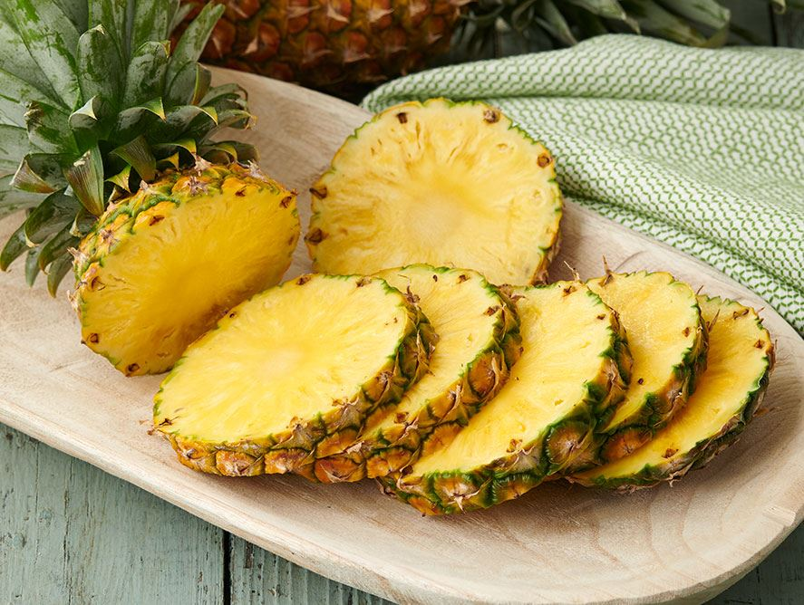
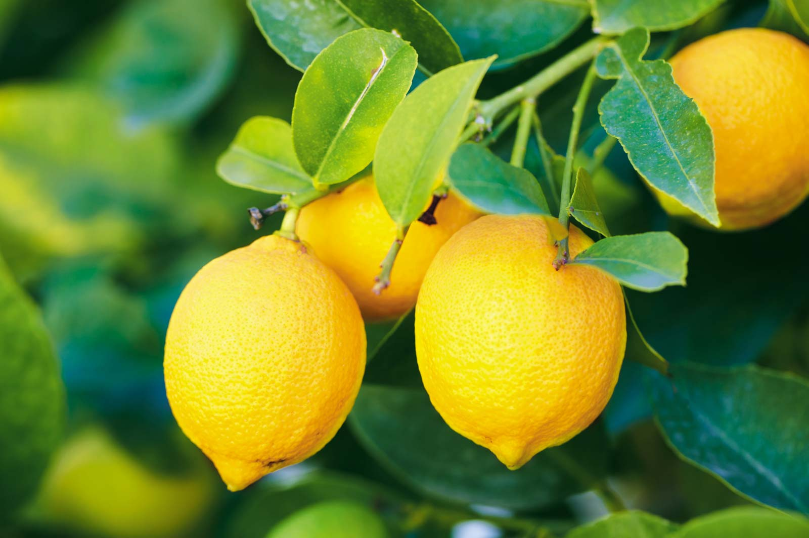
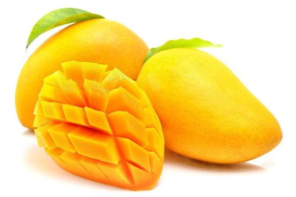

Yuzu
Yuzu is a citrus fruit and plant in the family Rutaceae. It is believed to have originated in central China as a hybrid of mandarin orange and the ichang papeda. The yuzu is called yuja in Korean cuisine.

Yuzu is a citrus fruit and plant in the family Rutaceae. It is believed to have originated in central China as a hybrid of mandarin orange and the ichang papeda. The yuzu is called yuja in Korean cuisine.
A banana is an edible fruit – botanically a berry – produced by several kinds of large herbaceous flowering plants in the genus Musa. In some countries, bananas used for cooking may be called "plantains", distinguishing them from dessert bananas.
The pineapple is a tropical plant with an edible fruit, also called a pineapple, and the most economically significant plant in the family Bromeliaceae. Pineapples may be cultivated from the offset produced at the top of the fruit, possibly flowering in five to ten months and fruiting in the following six months.
The lemon, Citrus limon Osbeck, is a species of small evergreen tree in the flowering plant family Rutaceae, native to South Asia, primarily North eastern India.The lemon, Citrus limon Osbeck, is a species of small evergreen tree in the flowering plant family Rutaceae, native to South Asia, primarily North eastern India.
Mangoes are juicy stone fruit produced from numerous species of tropical trees belonging to the flowering plant genus Mangifera, cultivated mostly for its edible fruit. Most of these species are found in nature as wild mangoes. The genus belongs to the cashew family Anacardiaceae
